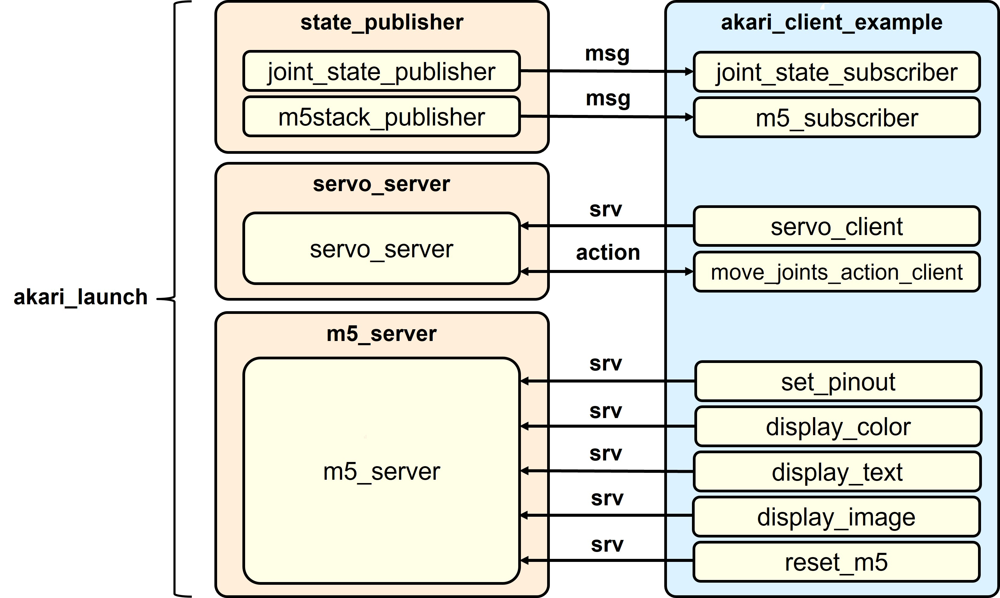

ROS2で動かしてみよう
セットアップしたROS2を動かしてみましょう。
akari_rosのパッケージ紹介
{kind=link}
最初に、akari_rosに含まれる各パッケージを紹介します。 akari_rosには下記のパッケージが含まれています。
- ・ akari_msgs
- akari_rosで使うカスタムメッセージ型、サービス型、アクション型を定義しています。
- ・ state_publisher
- akariのjointやM5のstateをメッセージとしてpublishするpublisherが含まれています。
- ・ m5_server
- akariのM5のコマンドを実行するservice serverが含まれています。
- ・ servo_server
- akariのヘッドのサーボのコマンドを実行するservice serverが含まれています。
- ・ akari_client_example
- サンプルアプリ群です。上記のpublisherからsubsclibeして表示するサンプルや、serverに対してserviceを実行するclientサンプルが含まれています。
- ・ akari_launch
- publisher、serverをまとめて起動するlaunchファイルが含まれています。
ROS2サーバの起動
最初にサーバ側のノードの起動が必要になります。
下記のコマンドでまとめて起動します。
ros2 launch akari_launch akari_launch.py
上記launchファイルでは、下記のノードをまとめて起動しています。
- ・ joint_state_publisher (パッケージ: state_publisher)
各関節の状態をpublishするpublisher
- ・ m5stack_publisher (パッケージ: state_publisher)
M5の状態をpublishするpublisher
- ・ servo_server (パッケージ: servo_server)
ヘッドのサーボのコマンドを実行するservice server
- ・ m5_server (パッケージ: m5_server)
M5のコマンドを実行するservice server
サンプルの実行
サーバ側のノードが起動したら、クライアントのサンプルで機能を確認できます。
サーボの制御
1a. サーボ状態の取得
サーボの現在状態を取得し、表示するサンプルです。ros2 run akari_client_example joint_state_subscriber
1b.サーボの制御
ヘッドのサーボ制御を行うサンプルクライアントです。実行すると、速度、加速度を変えながらサーボが動きます。ros2 run akari_client_example servo_client
1c. サーボの制御(action)
ヘッドのサーボ制御を行うサンプルのaction版です。actionで実行すると、サーボの移動中に現在位置をフィードバックとして受け取ることができます。ros2 run akari_client_example move_joints_action_client
環境情報の取得
2a. M5の情報取得
M5の現在状態を取得し、表示するサンプルです。ボタン、GPIOの入出力、環境センサの入力(気温、気圧、明るさ)が取得できます。ros2 run akari_client_example m5_subscriber
GPIO出力
3a. GPIO出力
ヘッドのGPIOの出力制御をするサンプルです。各ステップごとにGPIOデジタル出力(dout0,dout1)とPWM出力(pwmout0)が変化します。ros2 run akari_client_example set_pinout
ディスプレイ制御
4a. ディスプレイ背景カラー出力
ディスプレイ背景カラー変更のサンプルです。各ステップごとにM5の背景カラー変更を行います。ros2 run akari_client_example display_color
4b. ディスプレイテキスト出力
ディスプレイテキスト出力のサンプルです。ステップごとにM5の画面にテキストを出力します。ros2 run akari_client_example display_text
4c. ディスプレイ画像出力
ディスプレイ画像出力のサンプルです。ステップごとにM5の画面の様々な位置にサイズを変えた画像を出力します。ros2 run akari_client_example display_image
その他の制御
5a.M5リセット
M5リセットのサンプルです。M5にリセット信号を送ります。ros2 run akari_client_example reset_m5
ソフトウェア仕様(ROS2版) へ進む